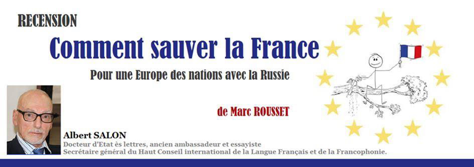

Recension : « Comment sauver la France. Pour une Europe des nation avec la Russie » de Marc Rousset
par Albert SALON

Paul Valéry nous a rappelé que les civilisations sont mortelles. L’économiste et essayiste Marc Rousset, ancien dirigeant de grandes entreprises, membre du Haut Conseil de la Langue française et de la Francophonie, nous montre que sauver la France, c’est d’abord sauver la civilisation, les cultures et la langue de la France et des pays et communautés d’expression française, tant de langue maternelle que de langue seconde maîtrisée, d’abord en Europe et en Amérique du Nord, mais aussi ailleurs, là où des personnes se la sont pleinement appropriée.
C’est aussi sauver la civilisation de l’Europe au sens large, carolingienne et slave.
Avec une conscience aigüe de l’urgence d’un puissant sursaut, Marc Rousset, à l’instar du poète autrichien Rainer Maria Rilke, appelle l’homme qui toujours revient lorsqu’une époque, menacée de finir, se reprend encore une fois, l’homme qui en soulève toute la charge, « und wirft sie in den Abgrund seiner Brust » (et la déverse dans l’abîme de sa poitrine). Marc Rousset rassemble lui-même courageusement en un dossier-plaidoyer à la fois richement nourri de faits et de chiffres, mais aussi fervent, vibrant, les plaies et les graves menaces dont nous souffrons. Il met à nu les violentes attaques que notre civilisation gréco-romaine et judéo-chrétienne subit tant de l’empire matérialiste anglo-saxon que de l’islamisme vengeur et conquérant. Il met surtout en valeur nos puissants atouts à mobiliser avec courage dans une victorieuse et brillante renaissance de l’Europe, puissante de ses nations, alliée et liée à la Russie.
Marc Rousset va dans le sens du combat du Haut Conseil et de ses associations pour le français et la Francophonie en estimant indispensable la construction d’un bloc de puissance grand-européen, confédération reposant non sur un marché ouvert à tous les vents et flux, mais « sur un socle culturel et militaire ». Il suit ainsi le Général de Gaulle refusant l’entrée de la Grande Bretagne en CEE pour cause de Commonwealth et - surtout - de l’anglais cheval de Troyes des États-Unis et de l’hégémonie linguistique anglo-saxonne à Bruxelles. L’histoire l’a confirmé. Notre auteur estime comme Umberto Eco que « La langue de l’Europe, c’est la traduction ». Et que la langue commune de communication pratique, utile à l’occasion, à côté des langues officielles et de travail des institutions de l’UE appuyées sur un service de traduction efficace, ne saurait d’aucune manière être la langue de l’impérialisme anglo-américain qu’il dénonce, car contraire à la nature et à l’indépendance de l'Europe.
Contre ce qu’il qualifie de lâche défaitisme et de trahison de trop de clercs et dirigeants français (dont M. Macron qu’il épingle notamment pour son discours de candidat de janvier 2017 en anglais à l’université Humboldt de Berlin), « collabos de la pub et du fric » selon Michel Serres, notre auteur invoque les Claude Hagège éminent linguiste et Laurent Lafforgue médaillé Fields, l’Immortel Jean-Marie Rouart, ainsi que l’initiateur du projet associatif Villers-Cotterêts de 2001 (heureusement adopté en 2017 par l’Élysée), tous quatre aussi membres du Haut Conseil.
Il invoque Bock-Côté et Stéphane Bern. Il rappelle l’importance de la francophonie mondiale forte de plusieurs centaines de millions de locuteurs et d’une organisation internationale (OIF). Sur ces bases, Marc Rousset affirme que « En prenant la tête, à sa manière, d’une internationale de la diversité des peuples, seule la France a vraiment les moyens de tenir tête à ce qu’on appelle communément le rouleau compresseur de la mondialisation. » Pour lui, le français est la seule langue continentale - et mondiale – pouvant prétendre à être au moins la référence juridique, culturelle, politique et diplomatique, de la nouvelle Europe-Puissance des Nations qu’il appelle de ses vœux, y associant la Russie. Selon lui, si les Européens n’acceptent pas que le français serve en outre la communication pratique en diverses circonstances, la seule autre langue à choisir ne peut être que l’espéranto.
L’anglo-américain ne doit en aucun cas usurper cette fonction.
Partager cette page